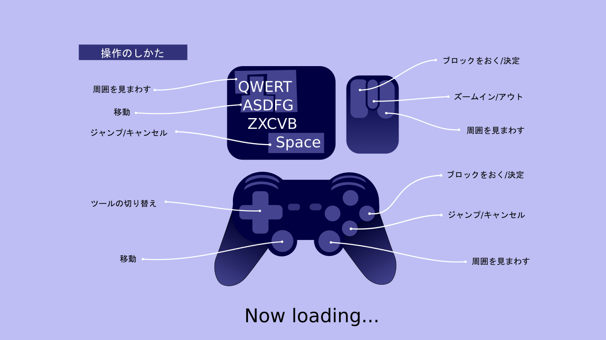
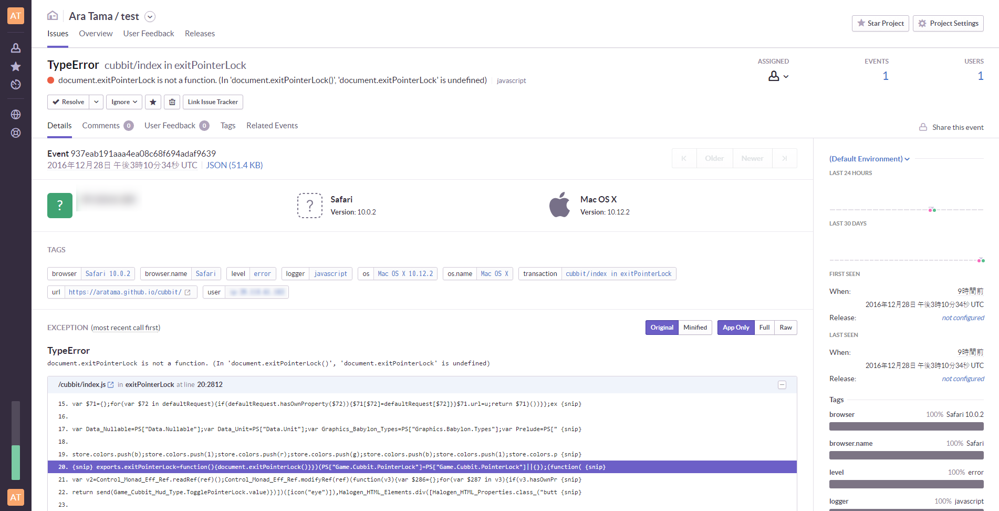
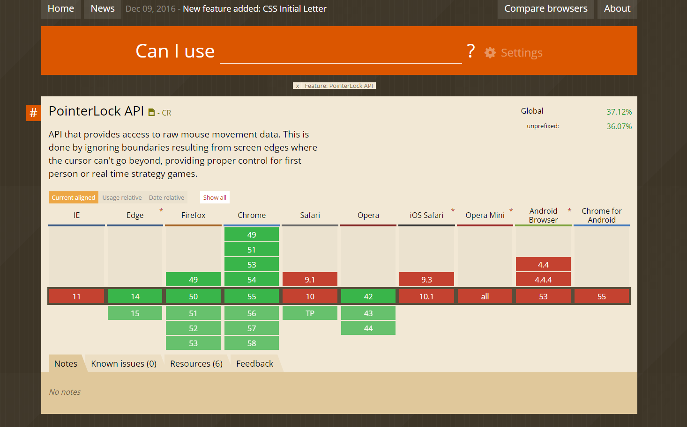

モナドのまほう 第16話『Gamepad APIでブラウザでもゲームパッドを使う/Sentryでクラッシュレポート』
ゲームを作る日記です。本作の開発費は０円です。
ゲームパッドに対応しました
行方不明だったゲームパッドが無事発見されたので、ゲームパッドへの対応を始めました。UIをかなりいじる必要があるのでまだ作業途中なのですが、フィールドを歩き回ったり周囲を見回す操作がゲームパッドでできるようになっています。
マウスやキーボードよりゲームパッドでプレイするほうが私は好きですし、むしろゲームパッド前提にしたくなってきました。ブロックを置くのはマウスのほうが便利なんですが、フィールドを歩きまわるのはゲームパッドのほうが圧倒的に楽です。ただ、ゲームパッドだと三人称視点でのブロックの配置操作をどうするかが悩みどころです。ドラクエビルダーズみたいに隣接する区画だけに置けるようにするというのもひとつの手だとは思います。
起動を早くしたいけど無理でした
ウェブから起動すると、github pagesがあまり早くないのもあって起動にかなりの時間がかかると思いますが、ローカルで動かしているときも起動に１０秒くらいかかります。開発中は頻繁に再起動を繰り返すので、あまり快適とは言えません。起動を早く出来ないか検討したのですが、いい方法が見つかりません。画像や音声などのファイルの読み込みを可能な限り遅らせようとしても、結局シーンの切り替えが長くなるだけで根本的な解決にはならなさそうです。よくクソゲーの理由として「ロードが長い」が挙げられますし、たびたび挟まれるロードはプレイヤーにとってかなりのストレスになると思われるので、そういう意味でも起動時に可能な限りすべて読み込んでしまうのがベターであるように思います。
しかたないので、起動中に間をもたせるために操作ガイドを表示することにしました。Inkscapeでテキトーに描いたんですが、やっぱりデザインのアイデアがさっぱり浮かんでこないのでダサいです。デザインってイラストレーションなんかともまた違ったセオリーがあってすごく難しいです。普段からデザインのアイデアを収集する習慣がないので、引き出しがぜんぜん足りません。またいい感じのデザインが思いついたら差し替えようと思います。

Sentryを試しています
クラッシュレポートが欲しくて、Sentry/raven-jsを試しています。使い方はとても簡単で、Sentryにアカウントを登録したあと、アプリケーションにraven.min.jsを読み込んで、それからRaven.config('https://<<SentryのID>>').install()を実行しravenを起動するだけです。そうすると、アプリでエラーが起きるたびにログを取ってくれます。
なおFirebaseにもクラッシュレポートの機能があって死ぬほど使いたいんですが、悲しいことにAndroidとiOSにしか提供されていないのです。それで早速ですが、SafariでexitPointerLockがないという問題が報告されました。なかなか便利そうです。

Can I Useで見ると、SafariはTechnology Previewっていうステータスになっていますね。うーん？

対処を考えたいですが、貧乏な筆者は残念ながらMacを持っていないので、いやMacが高いとかそういう意味ではなくガチで筆者は貧乏なので、今のところ推奨環境は筆者が動作確認のできるChrome/Firefox/Edgeに限っています。誰かが私にMacを買い与えてくれれば、Safariも加えたいと思います。他にも、古いSafari(?)でSyntaxErrorが出てますね。Safari使いの人はごめんなさい。問題が起きていることはある程度把握しています。QiitaはなぜかSafari率がかなり高いサイトのようですし、いずれSafariにも対応したいと思います。
ちなみにスマホはぜんぶ対象外です。性能面が極めて厳しいというのもありますし、操作性が劣悪なので筆者があんまりスマホでゲームするのが好きじゃないっていうのもあります。現代ではどう考えてもPCゲーよりスマホゲーのほうが売れますが、私はスマホゲー作るのはあんまり興味が薄かったりします。
rawgitでCDN
githubのreadmeに、RawGit/MaxCDNを通じてデモを起動するリンクを用意してみました。github pagesよりrawgit経由のほうがずっと読み込みが早いのでお勧めです。rawgitのほうのURLは随時変更されるので、readmeに乗っているリンクから開いてください。ただしドメインが変わってしまうので、シングルプレイヤーモードでのデータが共有できませんが。